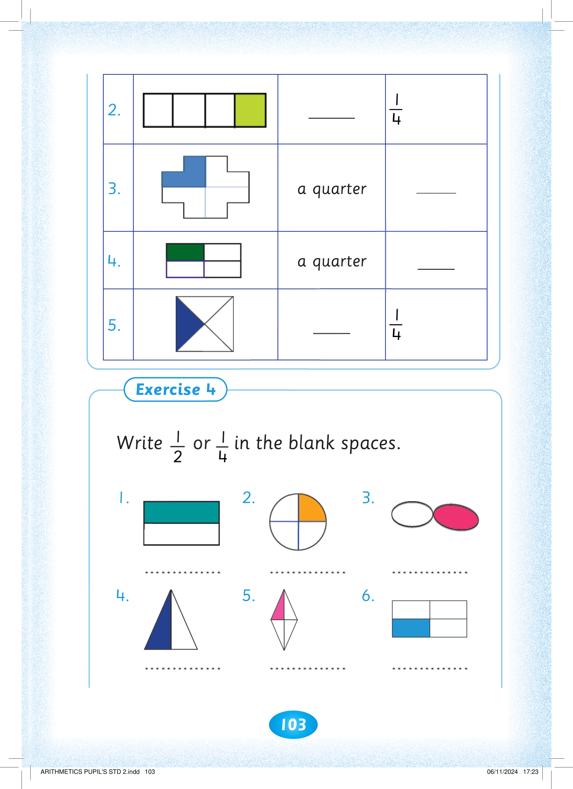
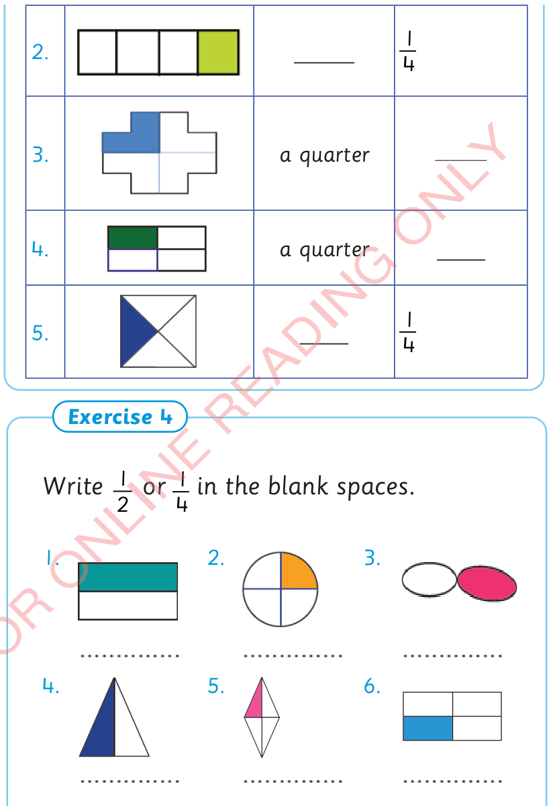

103



Exercise 3 continues. 2. A bar is divided into four equal parts, with the last part shaded green. Write the fraction in words. 3. A cross-shaped figure is divided into four equal parts, with the top-left part shaded blue. The shaded part is a quarter. Write the matching fraction. 4. A rectangle is divided into four equal parts, with the top-left part shaded dark green. The shaded part is a quarter. Write the matching fraction. 5. A square is divided into four equal triangles, with the left triangle shaded dark blue. Write the fraction in words and numerals.

_____
4
1
3.

a quarter
_______
4.

a quarter
____
5.

____
4
1
Exercise 4. Write 1 over 2 or 1 over 4 in the blank spaces. 1. A rectangle is divided into two equal halves, with the top half shaded turquoise. 2. A circle is divided into four equal parts, with the top-right quarter shaded orange. 3. Two equal ovals are side by side, with the right oval shaded pink. 4. A triangle is divided into two equal parts, with the left half shaded dark blue. 5. A diamond is divided into four equal triangles, with the top-left triangle shaded pink. 6. A rectangle is divided into four equal parts, with the bottom-left part shaded blue.
Write 2
1 or 4
1 in the blank spaces.
1.

2.

3.

4.

5.

6.


ARITHMETICS PUPIL'S STD 2.indd 103
06/11/2024 17:23